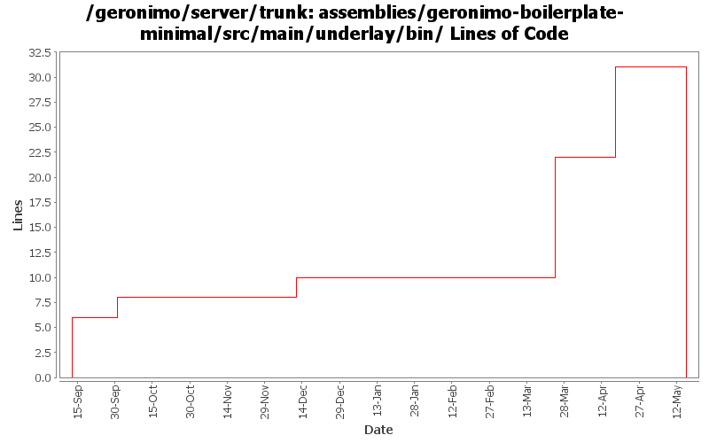

[root]/assemblies/geronimo-boilerplate-minimal/src/main/underlay/bin

| Author | Changes | Lines of Code | Lines per Change |
|---|---|---|---|
| Totals | 56 (100.0%) | 47 (100.0%) | 0.8 |
| gawor | 7 (12.5%) | 19 (40.4%) | 2.7 |
| jdillon | 43 (76.8%) | 16 (34.0%) | 0.3 |
| dwoods | 6 (10.7%) | 12 (25.5%) | 2.0 |
Drop -minimal suffix on the boilerplate, since we only have one of these now, the suffix is meaningless
0 lines of code changed in 19 files:
Drop unneeded ;
0 lines of code changed in 2 files:
GERONIMO-3900 Add runtime support for non-Sun JVMs. Merged in updates from 2.1.1 branch.
12 lines of code changed in 4 files:
merge in update from 2.1.1
0 lines of code changed in 2 files:
pass cli arguments to gshell correctly (GERONIMO-3935)
14 lines of code changed in 2 files:
cygwin fix: GERONIMO_TMPDIR should be passed as a relative directory (GERONIMO-3836)
3 lines of code changed in 3 files:
add scripts for starting app client which set up jvm properly (GERONIMO-3699)
2 lines of code changed in 2 files:
Update to use the latest gshell layout bits
4 lines of code changed in 4 files:
Adding stop-server command
2 lines of code changed in 2 files:
Use the --commands|-c flag to specify the commands to execute non-interactively
2 lines of code changed in 2 files:
Make the 'start-server' scripts run quiet
2 lines of code changed in 2 files:
Update the minimal boilerplate to install gshell bits, and use the assembly plugin to facilitate more of the dirty work
2 lines of code changed in 4 files:
Add other bits to the underlay tree
4 lines of code changed in 8 files: